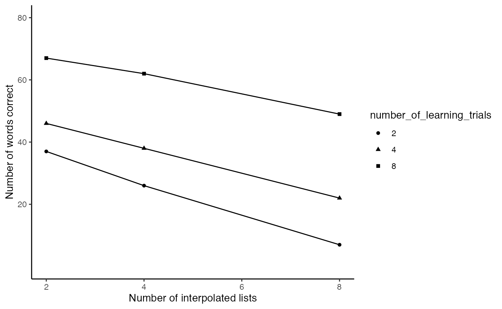
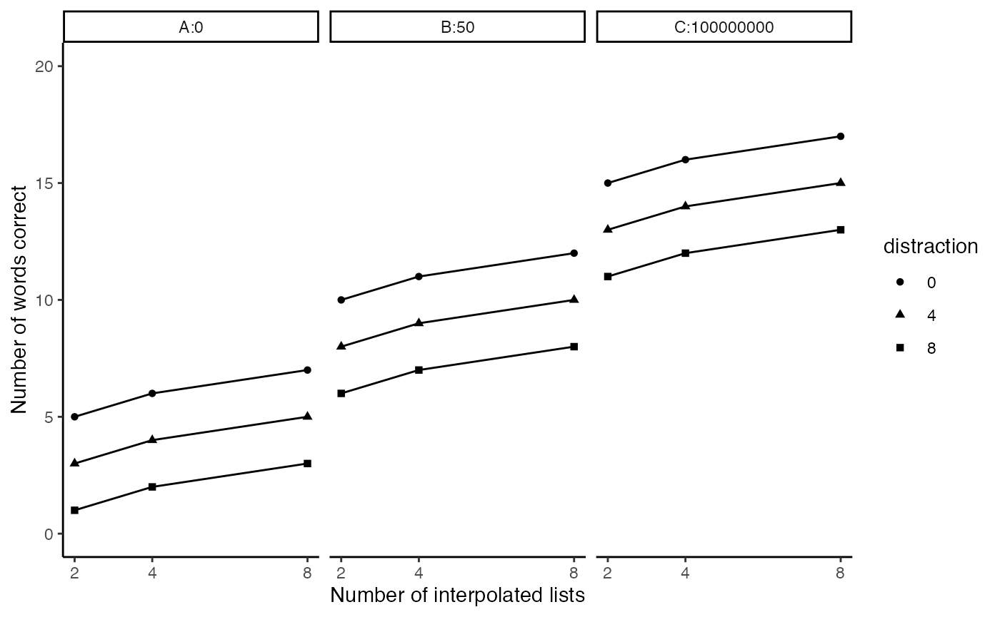

Lab2
Lab2.Rmd- The following code roughly reproduces figure 5.5 from the textbook (Abdi et al., 2009). Modify the ggplot code so that the graph looks as close as possible to the figure from textbook:
- change the x-axis title
- change the y-axis title
- make the x-axis and y axis ticks the same
- include different symbols to differentiate the lines
library(tibble)
slamecka_design <- tibble(number_of_learning_trials = rep(c(2,4,8),
each=6),
number_of_IL = rep(rep(c(2,4,8),2),3),
subjects = 1:18,
recall = c(35,21,6,
39,31,8,
40,34,18,
52,42,26,
61,58,46,
73,66,52
)
)
slamecka_design$number_of_learning_trials <- as.factor(slamecka_design$number_of_learning_trials)
library(ggplot2)
ggplot(slamecka_design,aes(x=number_of_IL,
group=number_of_learning_trials,
y=recall,
shape=number_of_learning_trials))+
geom_line(stat = "summary", fun = "mean")+
geom_point(stat = "summary", fun = "mean",)+
theme_classic()+
xlab("Number of interpolated lists")+
ylab("Number of words correct")+
scale_y_continuous(breaks=c(20,40,60,80), limits = c(0,80))
scale_x_continuous(breaks=c(2,4,8))
#> <ScaleContinuousPosition>
#> Range:
#> Limits: 0 -- 1- The Slamecka design was a 3x3 design. The practice variable had three levels (2, 4, and 8), and was assumed to increase memory recall with increasing amount of practice. The interpolated learning (IL or distraction) variable had three levels (0, 4, and 8), and was assumed to decrease memory recall with increasing amounts of distraction.
new_data <- tibble(reward = rep(c("A:0","B:50","C:100000000"), each = 9),
practice = rep(rep(c(2,4,8), each = 3),3),
distraction = as.factor(rep(c(0,4,8),9)),
recall = c(5,3,1,
6,4,2,
7,5,3,
10,8,6,
11,9,7,
12,10,8,
15,13,11,
16,14,12,
17,15,13)
)
library(ggplot2)
ggplot(new_data,aes(x=practice,
group=distraction,
y=recall,
shape=distraction))+
geom_line()+
geom_point()+
theme_classic()+
xlab("Number of interpolated lists")+
ylab("Number of words correct")+
scale_y_continuous(breaks=c(0,5,10,15,20), limits = c(0,20))+
scale_x_continuous(breaks=c(2,4,8))+
facet_wrap(~reward)